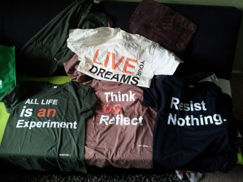
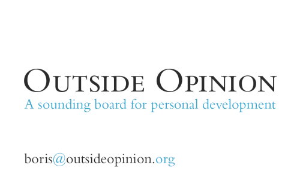
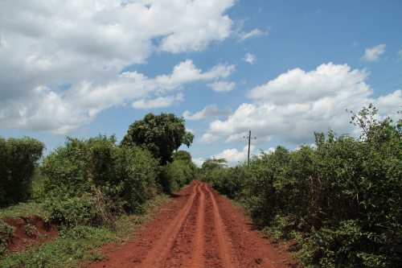
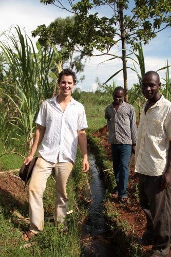

Current Pursuits & Ventures
A listing of businesses & ventures I am currently pursuing, working on, or looking for collaborators
Social Shirts
SocialShirts is a T-Shirt company with three (lofty) goals:
- Create T-Shirts that spark meaningful converastions
- Build a brand that inspires the wearer to live up to a high personal standard
- Create a powerful tool for self-expression
Round 1 of T-Shirts was a big learning lesson for us:

And we're ready to print round 2, and (soon thereafter), go to kickstarter! Our goal is to get 1,000+ customers.
T-Shirts coming up include:
- "Fearless Curiosity"
- "100 Life Goals"
- "Uncomfortable Honesty"
- [A Wordle of your interests]
..as you can see, we're trying to go for a less obvious message, but one that carries a lot of weight behind it, that the wearer will be able to back up and explain.
Outside Opinion
As a cumulation of a number of conversations, thoughts, and "what the hell am I doing" moments over the past few weeks/months, I decided to start a donation-based consulting practice. It's called "An Outside Perspective" — based on the idea that most of us are constantly struggling with one thing or the other; whether it be trying to figure out what our 'passion' or career path is, what we want to do with our free time, or what skills/ambitions/goals to pursue (or how to do it), or maybe it's a simple desire to be happier, healthier, and/or connected to a community.
That's hard to do on your own.

A snap of the my business card for this venture - how I get most of my clients
Being in a Rut
Sometimes, we get stuck in a mindset — a 'rut' — that keeps us from finding the answer. Other times, we're in an area that we know nothing about: "how do I go about figuring out what I'm passionate about? I've never had to do this before..". Sometimes, you already have the answer — but need to hear it in your own words/from someone else, to really run with it. Or, perhaps you're lacking a community that will support you in your goals, and have had a hard time finding it. And that's what I provide — a personal development sounding board. Anything from giving advice, having someone to bounce ideas you've been thinking about for a while, or helping you find like-minded individuals to connect with. Mind, body, spirit, and intellect — you have to consider the whole to be a full, happy, self-actualized human being.
Yes, this is technically a 'consulting' practice, but my clients never pay me until they've actually gotten something out of it — and even then, it's 100% donation-based. Pay $0 or $500, and it's all the same to me. I just want to help people.
Why am I qualified to do this?
Mostly, I bring to the table dozens of other people's experiences. Over the years, I've had hundreds of conversations with people about how they've grown and changed and gotten through hard times and to the place where they are now. I've learned their struggles and tricks and techniques, and studied the science and philosophy behind personal development — formally through psychology, humanism, and education, and informally, through self-help authors and thinking about these sorts of things on my own. What I realized, after years of trying this stuff on my own, is that it helps to have someone to bounce personal development ideas off of. Friends are good, but it can be hard to bring this sort of stuff up all the time. Plus, sometimes it can be more helpful — more powerful — to have someone you don't know, or normally don't talk about these things with, give you their thoughts.
"An Outside Perspective."
So..
Skype, call, e-mail, Facebook, meet in-person, over coffee, or on a walk — I'm flexible to you and your schedule. 100% client confidentiality, Always.
So shoot me an e-mail, ask me a question — let's talk. boris [dot] taratutin [@] live [dot] com
Kenya Local Tourism
This project started when I spend 3 months living in Kenya in 2011. It was one of the most incredible experiences of my life, and I made a number of friends there and spent a good portion of my time travelling around
What I learned was that most people there live on $1-$2 dollars per day, and that most tourism agencies in Kenya focus on taking you to the safaris and the southern part of Kenya. In reality, that's probably ~10% of the real Kenya, and the funds of those agencies mostly go to foreigners and rich, lazy individuals in Nairobi - not the 'common man' who really needs it.
This venture provides a chance to visit the /real/ Kenya - the villages, the people, the goats, the bright red dirt roads, the hundred-mile volcanic craters, the ancient prayer caves, the grave-size goldmines, the barefoot children, and the flamingoes - of everything in Kenya that isn't Nairobi/the safari. Of course, if you want to do a Safari, we can set that up too.
You'll live local, eat local, learn the local language, walk, bus, and travel like Kenyans do, and do a home-stay for 1/4 the price of a typical Safari. And 100% of proceeds go to the families you stay with - helping them go to school, fund their businesses, and pay for school fees.
The World - Kenya - is truly amazing. Contact me with any questions

A shot of me with Vincent and his brother, two of the people you'd be staying with and travelling wth if you went. - Sugarcane field